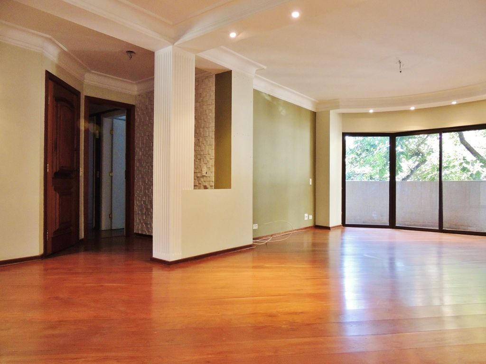
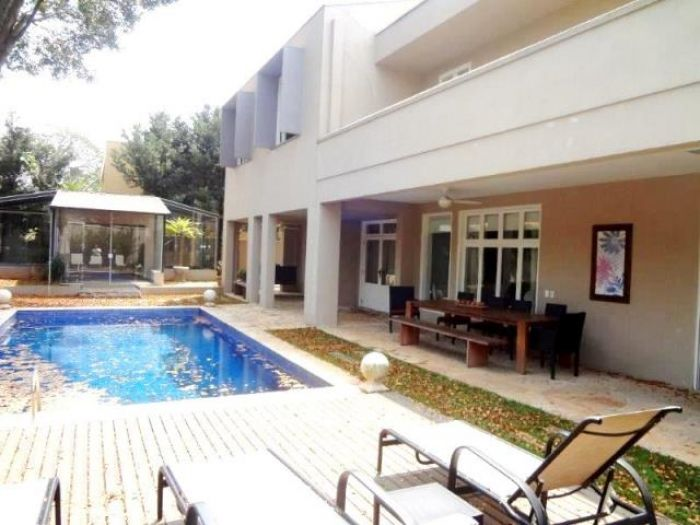
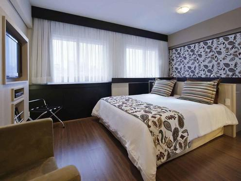
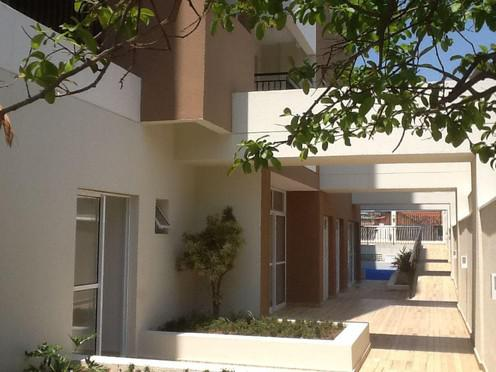

Apartamento pronto para morar à 750 metros da estação de metrô Vila Prudente, bairro da Mooca, com 3 dormitórios, 1 suíte, 1 vaga de garagem. O condomínio possui Piscina Adulto e Infantil; Solarium; Quadra Poliesportiva; Salão de Festas e Sala de Ginástica. O empreendimento tem fácil acesso à Av Professor Luiz Ignácio Anhaia Mello, Avenida Paes de Barros, Avenida do Estado e próximo ao Mooca Plaza Shooping.
Apartamento com 3 quartos à venda por R$ 1.380.000
Rua Doutor Bacelar, Vila Clementino - Zona Sul, São Paulo - SP

Morad apartamento de 3 dormitórios , 3 suítes , no bairro da Vila Clementino em São Paulo. Apartamento bem iluminado, naturalmente, sala ampla, próximo ao supermercado Pão de Açúcar, churrascaria Prazeres da Carne, Drogaraia e oustras conveniências.
Casa com 4 quartos à venda porR$ 8.450.000
Rua Mario Guastini, Pinheiros - Zona Sul, São Paulo - SP

Casa de quatro dormitórios, no bairro de Pinheiros, em São Paulo. Casa sobrado, estilo moderna de linhas retas, com 500m² de construção, em um terreno de 1064 m². Essa está próxima ao supermercado Pão de Açúcar, Drogasil, restaurante senzala, Posto shell.
Flat Central Towers por R$ 320.000,00
Rua Maestro Cardim Liberdade, Sao Paulo - SP

Características do Imóvel: Ar Condicionado, Armário de Cozinha, Fogão, Mobiliado, Porteira Fechada, Segurança Interna, 29m²,1 vaga, 1 quarto Características das Áreas Comuns: Academia, Área de Lazer, Copa, Estacionamento Visitantes, Piscina, Restaurante, Sauna.
Apartamento Tucuruvi por R$ 345.000,00
Rua Major Dantas Cortez Tucuruvi, Sao Paulo - SP

Apartamento novo no Tucuruvi, pronto para morar, planta moderna com xxx metros quadrados, ampla varanda gourmet, 2 dormitórios, 1 suíte, 2 banheiros , 2 vagas de garagem, torre única, lazer completo, brinquedoteca, forno para pizza, salão de festas adulto, salão de festa, academia de ginástica, piscina, churrasqueira e playground. Condomínio Maggiore Tucuruvi.